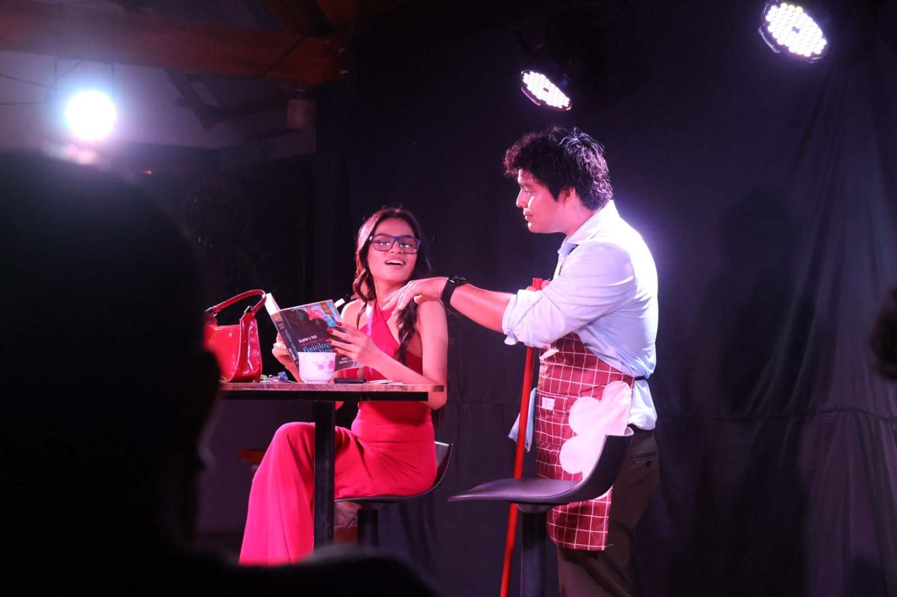
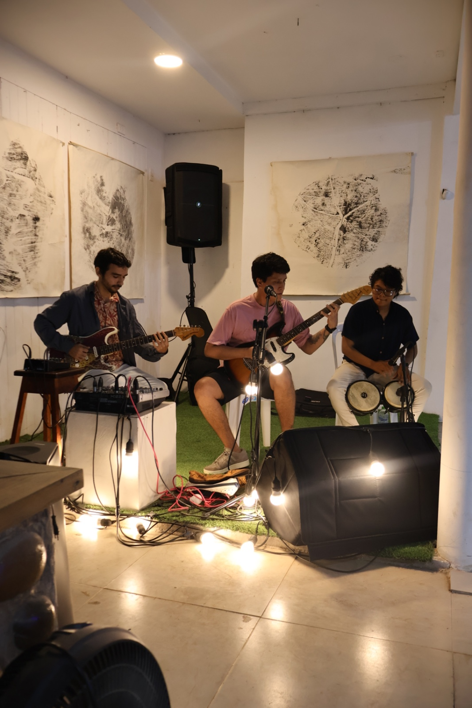
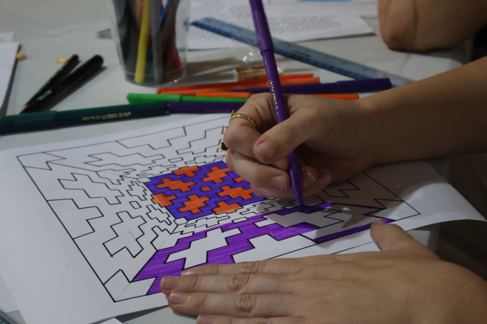
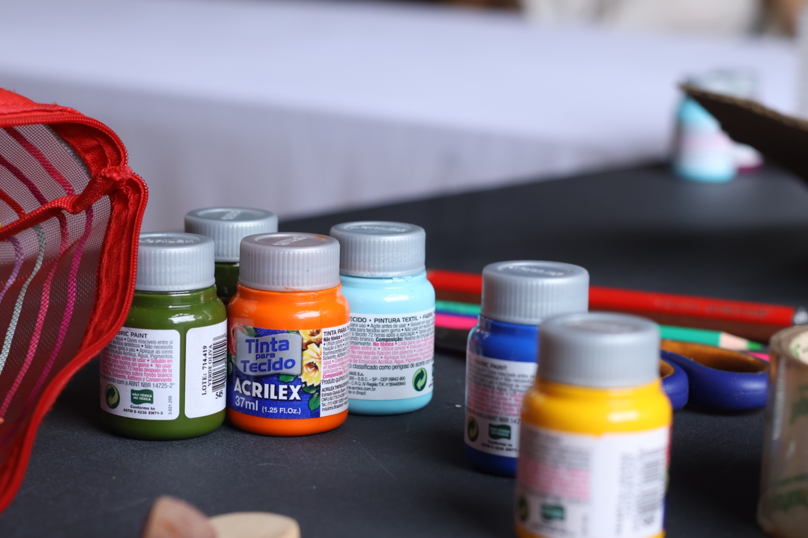
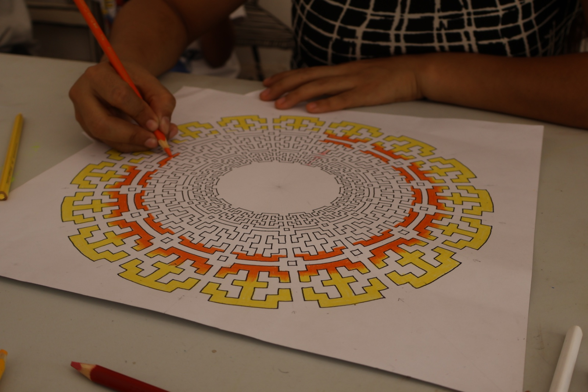

Book personalRetratos con identidad
Un recorrido visual por sesiones, celebraciones, eventos y propuestas creativas realizadas con dirección, luz y una mirada cercana a cada persona.


Filtra las secciones de la galería sin recargar la página.
Sesiones personales, familiares y de marca con una dirección visual sobria y expresiva.


Registro fotográfico para instituciones, marcas, activaciones y reuniones especiales.
Cuidamos planos generales, momentos espontáneos, retratos de asistentes y material listo para comunicación digital.
Cotizar eventoEventos
Producción en vivo
Música y escenaProducciones con color, atmósfera y composición pensadas para campañas, artistas y marcas personales.




Celebraciones con memoria visual.
Quinceaños, bodas, familia y fechas especiales narradas con elegancia y detalle.